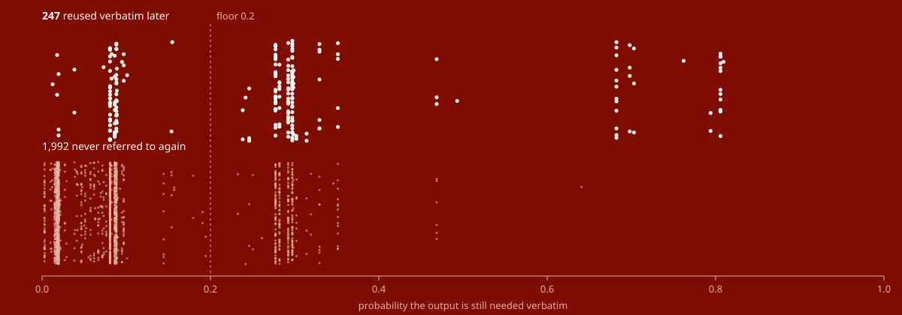
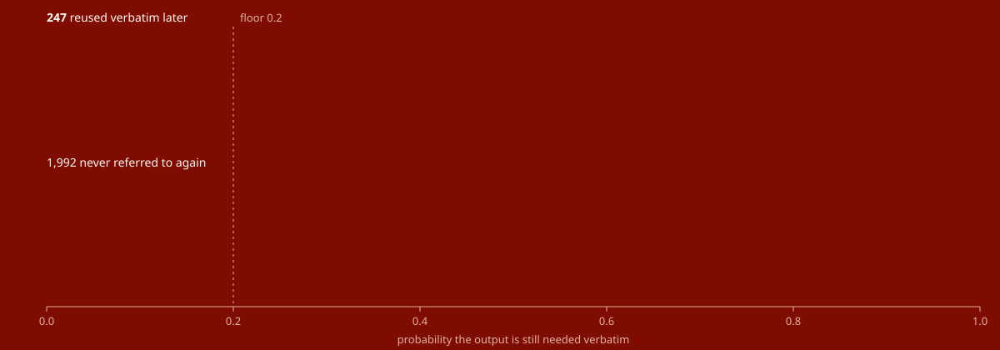

01Evidence
It replaces a neural model that it beat.
The plugin started as a port onto a 322M‑parameter neural decision model that runs locally. Measured against 1,063 tool calls labelled from 18 real sessions, a thirteen-coefficient logistic regression over facts already computed for free beat every checkpoint and question wording it was asked.
|
0.50 chance, the left edge of this scale; each bar below runs from 0.50 to 1.00 and its value is printed beside it.
0.70
0.90
1.00
|
||
| Built‑in scorer12 of 13 coefficients fitted |
|
0.905 ± 0.078worst split 0.684 |
|---|---|---|
| Output size aloneone raw feature, nothing fitted |
|
0.878 ± 0.010most of the signal |
| Neural, typed‑decisions“direct” wording |
|
0.719 ± 0.026best of nine configs |
| Neural, multilingual“direct” wording |
|
0.667 ± 0.023 |
| Neural, English“entailment” wording |
|
0.625 ± 0.016 |
| Keep everythingno scoring | 0.500the coin flip |
The built-in scorer won 10 of 10 paired splits, by +0.186 on average and by +0.018 on the closest.
Held out one session at a time across all 41, the same scorer gets 0.789, not 0.905. That is the number to plan around.
How to read these two numbers, and which corpus they come from
What these two numbers are. AUC is the chance that a needed output outranks an unneeded one, if you pick one of each at random: 0.5 is a coin flip, 1.0 is perfect ordering. Calibration error is how far the probabilities are from the truth — if it says 0.3 for a hundred outputs, about thirty should turn out to be needed. The first decides whether the ranking is any good; the second decides whether a fixed floor can be trusted to mean anything.
Read that bar as the narrow corpus. Those splits hold out 30% of 18 sessions — the ones the neural model was scored against, so the comparison is possible at all — and every scorer is judged on the same held-out sessions each split, which is what makes it paired. Splitting by session rather than by row, because calls inside one session are correlated. Across those splits the calibration error is 0.044 against every neural config’s 0.380–0.642. The coefficients that ship are fitted on all 41 sessions, where the same measurement gives 0.789 and 0.051 — the gaps in section 08 says why that is the pair to plan around.
02Who it is for
Five shapes of session, and what each one gets.
The saving is a property of how a session is shaped, not one number. Every figure here is measured elsewhere on this page; what is added is which one applies. Each carries its cost, because for one of these shapes the honest answer is raise the floor.
- Mostly shell.
- Most to free — the 32.6% session is commands whose output is never quoted again. Also the shape this scorer is worst at: 47 of the 55 outputs it wrongly dropped were command output. Same habit causes both.
- Large files.
- The ranking keeps these, correctly, which is why the cap exists: 27 calls of 2,239 run past 24,000 characters, and shortening those 27 frees 20.7% of the corpus. Here most of the saving is the cap, not the model.
- One long bug.
-
The
Editthat fixed it has a worthless output — 1 of 220 mutating calls was ever needed verbatim — so a scorer reading outputs drops it, and this page's own demonstration did. The guard saves 15 of those 220. A read can be re-run; a change cannot. - Nothing may leave the machine.
- 1,762 calls scored in 190 ms: no process, no card, no key, no request. Not a setting — the path that needed one was removed after it lost.
- Sessions that ask the operator questions.
-
Think twice. Four of the 55 wrong drops are
AskUserQuestion, 2,122 characters — the only ones here no re-run restores. RaisekeepThreshold; section 06 prices the trade.
03Watch it decide
Nine calls, two probabilities each, one ranking.
A session that finds a test failing only on CI, tracks it to a timezone in a fixture, and fixes it. Below is what the shipped scorer did to it, every row written into this page when the demonstration was generated, with nothing overridden. The five outcomes are defined in the glossary; Replay re-runs the decisions in the order the ranking spends in, lowest first.
- Bashnpm test -- auth.spec.tskeep-result 0.158 · keep-call 0.973
7,186 chhead only - Readsrc/auth.tskeep-result 0.762 · keep-call 0.946
36,341 chcapped - GrepJWT_SECRETkeep-result 0.020 · keep-call 0.037
89 chtoo small - Readsrc/config.tskeep-result 0.282 · keep-call 0.270
14,026 chkept - Bashgit log --oneline -20 -- src/auth.tskeep-result 0.081 · keep-call 0.093
1,547 chdropped - Read.github/workflows/ci.ymlkeep-result 0.282 · keep-call 0.270
5,615 chkept - Bashgh run view 4821 --log | tail -60keep-result 0.228 · keep-call 0.305
49,001 chcapped - Editsrc/auth.tskeep-result 1.000 · keep-call 1.000
29 chpinned - Bashnpm test -- auth.spec.tskeep-result 1.000 · keep-call 1.000
2,432 chpinned
How to read the bars, and what is constructed here
Two layers to every bar. The outline is how big that result was against the largest in the session; the filled part is how much of it survived the decision. So a head only row keeps its outline and shrinks its fill to 300 characters, and a dropped row keeps its outline with nothing in it.
Freed is not a slice of tool output. Dropping a call takes its input with it, so a
few of those characters were never in the column to its left. The git log
row above is the clearest case: 1,547 characters of output, 1,597 freed.
The transcript is constructed — every real session on this machine is someone's work and
this page is public. The decisions are not: the list is produced by running the shipped
scorer with the shipped defaults, and nothing in it was chosen by hand. Regenerate it with
npm run docs:demo.
What stops it: the floor, not the budget
A real session out of the committed corpus, at the moment compaction fires. Its calls are lined up in the order the budget spends them — lowest score first — and the sweep takes them one at a time until it is done. Watch where it stops.
The Edit it wanted to delete, and the two rules that came out of it
The first time this ran, the scorer dropped the Edit that fixed the
bug. Both its scores were low and honestly so — “Applied 1 edit to src/auth.ts”
is worth nothing, and exactly 1 of the 220 mutating calls in the corpus had an output
that was ever needed verbatim. But the input is the only record that the change
happened, and unlike a read it cannot be recovered by running it again.
So a mutating call is no longer the scorer’s decision. Edit, Write,
MultiEdit and NotebookEdit keep their call whatever the
probabilities say; only their output can go. The rule covers
220 calls in the corpus, and re-running the same decisions with
the guard removed shows what it actually saves: 15 of them
would otherwise lose their call or their output, against the single output in those 220
that was ever needed verbatim.
A second rule came from the same place. The Grep in the list above scored 0.020
and 0.037 — about as low as this scorer goes — and dropping it would have freed
126 characters — more than the 89 its result holds, because
dropping the call takes its input with it. Roughly thirty tokens, against a real chance of
losing something the session still needed. Below minYieldChars the ranking is
not worth acting on however confident it is, so that call reads too small rather
than dropped.
And then it does it again.
One compaction is not the product; the loop is. The engine asks at 60% of the window, this answers, you keep working, and it asks again. Each answer costs about 9 ms and hands back 9 points of window — so the model summary, which is a model call and rewrites your session into prose, runs after the sixth of them rather than the first.
- pass 1held 51.7% of the window, −9.0pts14 ms
- pass 2held 50.7% of the window, −9.4pts10 ms
- pass 3held 51.7% of the window, −8.6pts9 ms
- pass 4held 52.0% of the window, −8.3pts9 ms
- pass 5held 52.5% of the window, −7.5pts8 ms
- pass 6held 53.7% of the window, −6.6pts8 ms
- hand overheld 53.3% of the window, −6.7pts6 passes is the ceiling
One real session of 7,591 messages, replayed against a
200k‑token window. The dark part of each bar is what the session was still
holding; the red part is what that pass handed back. Of 5 sessions measured on this
machine, 3 looped at all, and between them the loop answered 9
compactions that would otherwise each have been a model summary. Snapshot of one machine's
transcripts, which grow as you work — eval/passes.ts re-runs it on yours.
Why a percentage of the window, and not a percentage of the session
Until this version the rule was minReductionRatio: 0.25: take the pass if it
removed a quarter of the transcript. Replaying the loop on real sessions, that bar took
0 of 14
passes — every one went to the model summary while this could still free
9 points of window in under 14 ms.
The unit was the mistake. A quarter of a 7,591-message session and a quarter of a 200-message one are not the same amount of room to keep working in, and room is what runs out. Points of the context window are comparable between them, and they are the same unit as the 60% trigger — which makes the rule its own guard: a pass that is taken leaves the session at least 5 points below the trigger, so it has to grow back through them before another compaction can be asked for. Compacting on every turn stops being possible rather than discouraged.
The ceiling is maxPasses: 6, and on the session drawn above it is
what stops the loop rather than the floor. That is deliberate: raised to 8 the same session
runs one more pass and then stops on the floor, and at 12 it stops in the same place. So
6 is not where the loop runs out — it is where this hands over anyway,
because what deferring the summary costs is not measured, and a
backstop whose value is a judgement should be the conservative one.
The extra passes are not free. Replayed over 32 sessions, the loop drops 21 outputs a later step went back to, against 6 for a single pass — 3.5× the loss for 1.38× the characters freed.
The first pass is the efficient one and that is structural: it compacts the whole
accumulated backlog at once, where the cheap bulk is, at
0.058 lost outputs per 10,000 characters freed. Every pass
after it works on fresh material only and pays 0.33 to
0.67 — five to ten times as much. It is still not an
argument for stopping at one, because the alternative to pass two is not keeping
everything: it is the model summary, which keeps no tool output verbatim at all. But the
price is on the page rather than under it, and maxPasses: 1 buys the
cheap pass and nothing else.
04The shape of it
Two thousand two hundred and thirty‑nine decisions.
Every labelled call in the corpus, placed by the probability the shipped model gives it. Above the line, the ones whose output really was reused verbatim later; below, the ones that never were. A single AUC is a summary of this picture.
Every one of the 2,239 decisions, plotted


05What you repeat
The same reading of every call answers a second question.
Deciding what to keep means looking at every tool call in a session. That same
observation says what this person does over and over — and a thing done over and over is a
skill nobody writes, because noticing it is the hard part. So the plugin counts the
shapes it sees, on your machine, and npm run propose ranks them
and drafts a SKILL.md for any row you pick. This capability is new and whether
its proposals are any good is not established — it has its own row in
the ledger. Below is what it found, including the part that does not
flatter it.
27 shapes that repeated, of 2,000 recorded over 40 sessions and 2,417 tool calls
All 27 shapes that repeated, ranked
| Kind | Signature | times | sessions | calls | chars | est. |
|---|---|---|---|---|---|---|
| the same command | sed -n | 95 | 2 | 95 | 167,518 | 262.5 |
| the same command | python3 -c | 55 | 2 | 55 | 24,781 | 79.8 |
| the same command | grep -n | head -<n> | 25 | 2 | 25 | 32,212 | 57.2 |
| the same run of tools | Read → Edit → Edit | 16 | 2 | 48 | — | 48.0 |
| the same run of tools | Read → Read → Edit | 14 | 2 | 42 | — | 42.0 |
| the same command | cat <path> | 10 | 2 | 10 | 29,901 | 39.9 |
| the same run of tools | Read → Write → Write | 7 | 2 | 21 | — | 21.0 |
| the same run of tools | Read → Read → Write | 6 | 2 | 18 | — | 18.0 |
| the same command | grep -n | 10 | 2 | 10 | 3,216 | 13.2 |
| the same command | cat | tail -<n> | 10 | 2 | 10 | 2,916 | 12.9 |
est. = total tool calls + total output characters / 1000, the ranking chosen for this. A model of effort, not a measurement of time; every input to it is on the row, so any row can be recomputed by hand. Greyed rows are generic shell verbs.
Of 2,000 shapes recorded,
27 repeated enough to propose — and
all 10 repeated command shapes are generic
shell verbs. The highest-ranked thing this found is
sed -n.
Every one of them is a verb like
sed, grep or cat. No skill helps with those. The best row that reads like an actual workflow —
Read → Bash(grep -n) → Bash(sed -n) — is ranked 11th, because the ranking
rewards total work and a generic verb runs more often than a workflow does.
Watch 1,843 commands land on the shapes they repeat
Why this is not established yet, and what it cost to find out
That is not the finding this was built to get. The classifier itself works: the counts are real, the signatures group work that belongs together, and three separate design ideas turned out to be wrong only because the data said so — 94% of command shapes were seen exactly once until a pipeline stopped keeping every stage's arguments, sequences never formed at all until the window slid across batches instead of inside one, and the 2,000-row cap cut the rarest kinds to nothing until each kind was pruned against itself.
What is not established is the premise underneath it. These sessions are an assistant's tool use, and what an assistant repeats is reading files, editing them, and reaching for the shell.
Two things this table is not. It is not from a live install: the recorder only sees sessions
from the moment it is switched on, so these counts come from replaying existing transcripts
through the recorder's own functions (eval/signals-fixture.ts) rather than from the
hook having run. And it carries no examples — the signatures are shapes and safe to publish, but
the samples kept beside them are raw text, and the first fixture built without stripping them
passed all eight credential checks while carrying another project's brief and a path with a
session id in it. On your own machine the samples are the point, because they are how a wrong
grouping becomes visible. In anything published they have no place.
Nothing recorded leaves the machine, and nothing is written into a skills directory: drafts land
in .kompact/proposals/, which Claude Code does not read. Set
recordSignals to false to record nothing at all.
06Cost
190 ms to score 1,762 tool calls.
Compaction stops being a model call and becomes arithmetic. These are whole session logs, so the totals span more than one context window, so the ratio is what transfers.
| Session | Calls | Tokens before | After | Freed | Scoring |
|---|---|---|---|---|---|
| 25e65eab | 473 | 273,749 | 222,052 | 18.9% | 49 ms |
| 20628921 | 921 | 825,889 | 556,490 | 32.6% | 110 ms |
| 78d7d176 | 335 | 391,638 | 341,578 | 12.8% | 28 ms |
| agent-a7606f | 33 | 42,819 | 41,272 | 3.6% | 2 ms |
| Total | 1,762 | 1,534,095 | 1,161,392 | 24.3% | 190 ms |
Modest on purpose. The absolute cut this replaced frees 95.3% of the labelled corpus and keeps 8.9% of the outputs that were reused later — the first row of the policy table below, and the reason a third is the honest number. Measured on one machine’s own transcripts, which grow as work continues — the per-session column is the figure that carries.
Get this table for your own machine first
Clone the repository and run npm run dry-run — the commands are in
section 09, Install. It reads
~/.claude/projects, scores every tool call in every transcript it finds, and
prints the table above for your sessions instead of these. It writes nothing, installs no
plugin, and needs no key — it is the same compact the hook calls, run against
your own history. If the number it prints is not worth having, you have lost a minute.
Expect somewhere in 3.6% to 32.6% — the range four sessions covered, which is not a distribution. What moved it here was tool mix and length: the 32.6% session is mostly commands whose output is never quoted afterwards; the 12.8% one is mostly large reads that get read again; the 3.6% one is 33 calls long, and a session that short has almost nothing to free. At four sessions that is a reading of these four and not a rule — nothing here has measured how much of the spread is noise. The dry run tells you which of those you are.
Why it frees a third and not four fifths
The scorer produces a ranking, and a ranking transfers across sessions better than an absolute probability cut — 0.789 held out one session at a time against 0.879 on the narrower corpus, so it degrades rather than collapses. A cut does not travel at all, because every session has its own mix of tools and so its own distribution: a Bash-heavy session scores low throughout, and a fixed cut sweeps all of it. Barely 11% of tool outputs are ever reused verbatim — 247 of 2,239 — so a well-calibrated scorer seldom passes 0.5 even for the ones that matter.
Calls are therefore dropped lowest-score-first only until the reduction target is met, with the keep threshold acting as a floor that nothing is dropped above. Simulated per session on the labelled corpus, scored leave-one-session-out:
| Policy | Output freed | Reused outputs kept | Reused characters kept |
|---|---|---|---|
| Absolute cut at 0.5 | 95.3% | 8.9% | 16.9% |
| Budget 0.5, floor 0.2 (shipped) | 23.4% | 77.3% | 92.2% |
| Budget 0.6, floor 0.2 | 28.3% | 72.1% | 91.4% |
| Budget 0.7, floor 0.2 | 33.9% | 68.8% | 90.2% |
What the cap costs, priced. The 33.7% above includes it; so does this. Of the 247 outputs that were genuinely reused later, 5 are longer than the cap, and shortening them removes 76,466 characters those later steps had quoted — 6.2% of every reused character. Counting the wrong drops beside it, 87.9% of reused characters survive the shipped defaults and 12.1% do not. The gain and the loss are measured the same way, because for a while only the gain was.
Freeing nearly everything is easy and nearly worthless. Run through the shipped code rather than this simulation, the same defaults give 33.7% freed and 77.7% kept. The sweep has no notion of two shipped rules: a call recording a change is never dropped, and a kept result is capped at 24,000 characters. The cap is most of the gap — 27 of the 2,239 calls are longer than it, and shortening those 27 alone frees 20.7% of every character in the corpus. Calibrating on your own sessions is an accuracy upgrade rather than a prerequisite, because the policy adapts to your distribution on its own.
What the neural sidecar would have cost to run
The neural model is not in this product any more — there is no option that turns it on,
and nothing shipped imports it. What it cost to run is a large part of why. The
eval/ scripts still measure all of this against a live sidecar, so every row below
is reproducible rather than remembered. One router process loads every checkpoint and routes
per request, so memory and start-up belong to the router rather than to any one checkpoint.
| Scoring 1,762 calls, the four sessions above | Time | Memory held | VRAM | Cold start |
|---|---|---|---|---|
| Built-in scorer | 190 ms | none | none | none |
| Neural sidecar, fastest checkpoint, on a GPU | 41 s | 4.9 GB | 1.4 GB | 7.6 s |
216× the time, for a lower AUC, on an RTX 4060 Laptop. Per request the fastest checkpoint answers eight questions in 573 ms and the slowest in 1,906 ms. Fine-tuning moves the AUC; it does not move this table.
This row is a correction. It used to read 23.1 s and
122×, from a projection in eval/sidecar-bench.ts that
divided the number of requests by the number of questions in a request — but a request
carries one call's two questions, so there is one request per call and the projection halved
itself. The VRAM said ~5.0 GB and was read off a router started with
in CPU mode, which puts almost nothing on the GPU at all. Both figures
flattered the sidecar. The row now says what was measured end to end against a CUDA
sidecar: 24.9 ms a call over 159 calls, multiplied out to the same
1,762, with the VRAM read while the model was actually resident on the card. Concurrency
does not rescue it — 928 ms a call with one request in flight, 1,002 ms with eight, because
the GPU serialises.
07Where it loses
The model this replaced fails quietly, which is worse than failing.
The English checkpoint reads 512 tokens and discards the rest with HTTP 200 and no
warning. eval/truncation.ts asks one question — the text says the
deployment was rolled back — of four states. Every one of them states the fact
verbatim. Only the position of the sentence changes.
| State | Characters | Tokens read | Answer |
|---|---|---|---|
| The sentence alone | 85 | 47 | 0.8472 |
| First, plus filler | 8,140 | 512 | 0.9152 |
| First, plus 5× filler | 40,360 | 512 | 0.9152 |
| Last, after 5× filler | 40,360 | 512 | 0.2191 |
Rows two and three are bit-identical: 32,220 characters were discarded and nothing in the response says so. Row four is the bill for that. It is the same 40,360 characters and the same sentence, moved to the end where the cut removes it, and the answer falls from 0.9152 to 0.2191 for a fact the text still states verbatim — from the right side of any threshold to the wrong one. A caller cannot tell rows three and four apart: same HTTP 200, same shape, same silence. Whether an answer is about your input or about the first 512 tokens of it is settled by where the evidence happened to fall. Both upstream projects send the whole conversation, up to 25,000 tokens, as one state.
This table used to be three rows that no script produced — the one claim here with no code
behind it, on a page arguing that every figure is generated. It is
npm run eval:truncation now, and the figures it prints are these. The
ones it replaced are retracted: they showed the cut but not what the cut costs.
What the other 22.3% costs
“77.3% of reused outputs kept” invites you to supply your own answer for the rest, so here
it is, priced. (77.3 and 22.3 sum to 99.6, not 100: the two figures come from
eval/policy.ts and eval/recovery.ts, which disagree by one output
on where a partial head counts. Neither is rounded to hide it. Both are the simulation; run through the shipped code the same defaults give 33.7% and 77.7%, which is the pair the masthead quotes.) Held-out scores, shipped policy, per session: 55 of the 247 reused
outputs are dropped — 1.34 a session, and only one of them kept a head.
| How it would be recovered | Outputs | Characters | Produced by |
|---|---|---|---|
| Re-run the command, side effects unknown | 47 | 42,389 | Bash |
| Read the file again | 4 | 53,680 | Read |
| Not repeatable at all | 4 | 2,122 | AskUserQuestion |
Only one of the 55 kept a head, because when a result scores below the floor the call
usually does too. Forty-seven are command output that a later tool input quoted verbatim —
the shape this scorer is worst at, since most command output is never referred to again and
the minority that is gets swept along with it. Four are AskUserQuestion: a
human answer, which no amount of re-running brings back.
This is recovery cost, and it over-counts — it includes reuses that had
already happened when a real compaction fired. The next section measures what is actually
at risk.
Compacting where the engine would actually fire, 27 of 32 sessions lost nothing at all. Across the rest, 6 outputs were dropped that a later step went back to: 0.19 a session, and 8.8% of what was genuinely still needed. Nothing here replays an assistant against the compacted transcript, so whether that changed the work stays not verified.
How that was counted, and what the looser count says
Every figure above asks whether an output was reused somewhere later, which counts
reuses that had already happened by the time a compaction fired and could never have been
lost. eval/outcome.ts asks it in the right order: find where the engine would
actually compact — 60% of a session's tool output — decide only the calls present at that
moment, then count the reuses that come afterwards whose source was dropped.
| Compacting at 60%, across 32 sessions | Count |
|---|---|
| Calls present when it fires | 1,038 |
| Reused only after that point | 68 |
| …and dropped anyway | 6 |
| Sessions that lose nothing at all | 27 of 32 |
0.19 lost outputs a session, and 8.8% of what was genuinely still needed. This is the necessary condition for the work to suffer, not proof that it did: nothing here replays an assistant against the compacted transcript, and that remains unverified.
Five more things it does not do
A summary compresses harder. Freeing a third of the tokens is less than replacing the conversation with a few thousand tokens of prose. What you buy with the difference is not re-running tools to recover what a summary threw away.
One feature does most of the work. Output size alone scores 0.878 with an eighth of the spread — sd 0.010 against 0.078 — and a sixtieth of the variance. The other coefficients earn their place on characters freed at a given safety level, not on ranking.
It has never seen a Grep. The corpus contains no
Grep and no Glob call at all, so that feature never fired during
fitting and its weight is 0.0 — zero by absence, not by
measurement. A search falls to the reference level, alongside WebFetch and
Agent, about which this scorer also knows nothing. Thirteen features were
defined; twelve were fitted.
The shipped coefficients are one person’s sessions. A different tool mix
scores differently and nothing detects that for you, so npm run calibrate
refits on your own transcripts and reports whether it helped.
It never shortens what a tool was asked. Every lever here acts on
output. eval/mass.ts says output is 47.1% of a
transcript and tool input is 42.7% — a
Write carries the whole file it wrote, a Bash its heredoc —
and nothing shortens any of it. eval/inputs.ts priced capping it and the trade
is poor: capping every input at 16,000 characters frees
1.9% of the transcript for
1.3% of the passages later steps quoted back, against
20.7% for 6.2% on the output side.
Reuse inside an input sits at median depth 0.50, so a head cap
samples it rather than trims it, which is the same reason head-and-tail truncation lost.
The full table
includes the one tool that would be worth capping and why a default built on 26 calls from
one machine would be a default fitted to this operator.
08Verification
Seven claims checked, five not.
The minimum Claude Code version — not verified
Everything here was run on 2.1.281, which has function hooks. Which release first shipped them has not been established, so “2.1.281 or newer” would be a claim from a sample of one. On a build without them the plugin installs and never runs.
An assistant still finishing the job — not verified
The measurement above shows how often the information would no longer be there. Whether that changes what the assistant does needs the same session replayed with and without compaction, which needs a live A/B.
That a proposed skill is worth having — not verified
The repetition in section 05, What you repeat is measured, and the drafts validate as skills. Whether writing one saves anyone anything is not measured at all: it needs the same work done twice, once with the skill and once without. Every one of the 10 repeated command shapes is a generic shell verb, which is evidence against rather than for.
What deferring the summary costs — not verified
Six passes run before the model summary does, and how much room each one buys is measured. What the assistant loses by not getting a narrative summary for six compactions is not: this keeps verbatim tool calls and prose, which is a different thing from a story about them. maxPasses exists so the summary happens eventually, and its value is a judgement, not a result.
The engine calling session.compact live — not verified
The plugin loads and turn.complete fires in a real session, but the engine declines to compact below ~31% full and the model cannot invoke /compact itself. Covered by the real-session test; the engine-side handoff is not.
And the 7 claims that are verified
Beats the model it replaces
1,063 labelled calls, 18 sessions, 10 grouped splits, paired. eval/repeat.ts
No orphaned tool call survives
Run over a real session from disk. An orphan is rejected by the API and would break the session compaction was meant to save.
Prose is never touched
Same real-session test: only tool calls and results are dropped or truncated.
A dead scorer cannot break a session
Falls back to the built-in summary; a single failed request keeps its call.
Works for Codex CLI, against a fixture
jev-compact’s own parser, scorer and HTTP client driven over its recorded rollout fixture against our server. Not run against a live Codex: that plugin needs Codex ≥ 0.155 and this machine has 0.131.
What a compaction costs the work
Compaction simulated where the engine would fire it, then the reuses that come afterwards counted: 6 of 68, 0.19 a session, 27 of 32 sessions losing nothing. eval/outcome.ts
The sidecar truncates silently
One question asked of four states that all state the fact verbatim: two differing by 32,220 characters answer bit-identically, and moving the sentence past the 512-token cut takes the answer from 0.9152 to 0.2191. eval/truncation.ts
The gaps, in the order they matter
Everything above this line is measured. Everything below it is not yet, and is written in the future tense on purpose.
Blocks a 1.0
A live A/B. Task outcome is measured in section 08, Verification as far as a transcript allows — how often the information would no longer be there. Whether that changes what an assistant does needs the same session replayed both ways, against a real model, and it has not been.
Open
The corpus is still one person's. Widening it from 18 sessions to 41 — all the same person — took leave-one-session-out AUC from 0.879 to 0.789, and calibration error from 0.035 to 0.051. Nine points and half again the error, inside one person's own work. A second operator's corpus would say how much of what is left is this person's habits.
Blocks a 1.0
The live handoff. The engine calling
session.compact and accepting the replacement message list has not been seen
in a real session — forcing it needs genuine context pressure.
Needs a machine
A live Codex CLI. Verified against a recorded rollout fixture; that plugin needs Codex ≥ 0.155 and this machine has 0.131.
Wanted
A fine-tuned neural checkpoint that wins. The bar is 0.905, not
chance. eval/ re-runs the whole comparison for anyone who tries, and the
section 06, Cost is the other half of that decision.
Structural
More than one person's sessions. The corpus is 41 sessions from one machine. A committed scrubbed copy ships with the repository so a second corpus can be compared against it rather than replacing it.
The questions a sceptic asks
Isn't this just a heuristic with extra steps?
It is a heuristic with error bars, which is the difference. Thirteen coefficients — twelve features and an intercept — fitted on labelled data, evaluated on sessions held out whole, calibrated well enough that the threshold means a probability — expected calibration error 0.035 leave-one-session-out on the 18-session corpus and 0.051 on all 41 — the 0.044 in section 01, Evidence is the same quantity averaged over ten grouped splits instead. “Big outputs get reused” alone reaches 0.878, so most of the signal really is one feature — three coefficients of the twelve, since size is banded — and the other nine earn their place on characters freed at a fixed safety level, not on ranking.
Why did the neural model lose?
It was asked to read facts as prose that the features encode directly, and it was never
trained on this task. The model’s own documentation says its base checkpoints sit near chance on
typed-decision workflows and should be treated as a fast base to specialise. That is what
was measured, and the wording mattered more than the checkpoint: on
typed-decisions, asking what the assistant should do next scores
0.719, and asking what is true of the text scores
0.416 — below the coin flip, which is worse
than not scoring at all. That is the reverse of
what that documentation suggests, which is the finding rather than an
embarrassment: the checkpoint is better at a decision than at an entailment.
The checkpoint named for English is also not the best at English. On that same
wording it scores 0.480 — below the coin flip —
where the multilingual one scores 0.667, and the two ranges
do not overlap: English tops out at 0.502, multilingual bottoms out at 0.638. English wins
only on entailment, by 0.021, which is inside one standard deviation, and its best config
still loses to multilingual's best. It also reads half the context, 512 tokens against
1024, and runs about three times slower. None of that is why the sidecar loses —
typed‑decisions reads 1024 too and reaches 0.719 — but it does mean
there is no configuration in which the English checkpoint is the one to pick.
Will it delete something I need?
Sometimes — 0.19 outputs a session where it would actually cost you something, and 27 of 32 sessions lose nothing at all. Counting every reuse anywhere later, including ones that had already happened before a real compaction could fire, the upper bound is 1.34 a session. Both are in section 07, Where it loses, and 47 of the 55 are command output. A dropped result keeps its first 300 characters when the call survives, and a call that recorded a change is never dropped at all. Every failure mode falls back to Claude Code's own summary rather than to a half-compacted transcript, and a single failed request keeps its call: a wrong keep costs context, a wrong drop costs work.
Do I have to calibrate?
No. An earlier version effectively did, because an absolute probability cut cannot survive
a distribution it was not tuned on. Dropping lowest-score-first until a character budget is
met adapts on its own, so npm run calibrate is an accuracy upgrade. It is still
worth running: the shipped coefficients come from one person's 41 sessions, and
leave-one-session-out across them gives 0.789, not the 0.905 the narrow corpus shows.
npm run dry-run needs nothing installed if you want the size of the prize
before the accuracy of it.
How is this different from the built-in /compact?
/compact?The built-in asks a model to summarise the session and replaces it with prose, which compresses far harder than a third. This keeps what survives verbatim, so a file you read is still the file, not a description of it. It is not a better compressor; it is a different trade — and it hands the session back to the built-in summary whenever it cannot do its job.
09Install
Function hooks are early access, so turn them on first.
Tested on Claude Code 2.1.281, which has function hooks. So the rule is
2.1.281 or later works; below it is unknown rather than broken — which release first
shipped them is not established here, and on a build without them the plugin
installs and silently never runs. Check claude --version, then
what it touches below for the notice that proves it fired, and the
verification ledger for what is and is not established.
Or don’t install it yet. Clone
the repository and run
npm run dry-run: it scores your own transcripts with the same code the
hook calls and prints both what one compaction would free and how many passes the loop
would take before handing over, writing nothing and installing nothing.
Needs git and Node 18 or later, and it reads the sessions already in ~/.claude/projects — with
none there it has nothing to score and says so.
Section 06, Cost has the range to expect.
shell · nothing installed
git clone https://github.com/AxeForging/kompactcd kompactnpm installnpm run dry-runshell · then install it
export CLAUDE_CODE_ENABLE_FUNCTION_HOOKS=1claude plugin marketplace add AxeForging/kompactclaude plugin install kompact@kompact
It replaces compaction rather than repairing it: Claude Code’s session.compact
hook returns a replacement message list. Any failure at all (scorer down, malformed
response, or a saving below the minimum) falls back to the built-in summary.
What it touches, and what it never touches
Nothing on disk changes. Compaction rewrites what is sent to the model for
the rest of the session; the transcript in ~/.claude/projects is untouched, and
uninstalling puts the next compaction back to Claude Code’s own summary. Everything below is
the shipped behaviour, not a policy: each line is a default in src/compact.ts or
a guard the scorer does not get a vote on.
If nothing happens
It says so, every time it fires. On each compaction the plugin raises a notice reading
kept 34/212 messages, no summary (23% reduction;
34 kept, 1 results truncated, 2 calls dropped, 4 pinned;
41 scored; compacted in 4ms) — and writes the
same line, plus one per decision, to the session log. The parts sum to what was scored, and
the time is the whole compaction — collecting the calls, scoring them, deciding, and
rebuilding the transcript — for the 41 calls in that one, not the 1,762 in
section 06, Cost. If anything at all goes wrong you get
the other notice instead, naming the reason:
fallback to built-in summary (…). Silence at a compaction is
different: it means the hook never ran at all, which is a setup answer rather than a bad
decision. claude plugin list confirms it is installed; only the notice
confirms it is running. Two checks, in this order:
echo $CLAUDE_CODE_ENABLE_FUNCTION_HOOKSmust print1. Empty is the usual answer and the usual cause. It has to be exported before Claude Code starts, so typingexportinto a session that is already running changes nothing for that session — and nothing for the next terminal either, unless the line is in your shell's startup file.claude plugin listmust showkompact. If it does, the variable is1, and no notice ever appears, the build is older than function hooks: see the version rule in section 09, Install.
Everything it touches, in full
- The last six messages are never touched, whatever they contain.
- Your prose and the assistant’s is never touched. Only tool results and tool calls.
- A shortened result keeps its first 300 characters, so the call is still legible and the tool can be run again.
- A call that recorded a change —
Edit,Write,MultiEdit,NotebookEdit— is never dropped, whatever it scores. - A kept result is still capped at 24,000 characters, because half of all tool output lives in about 3% of the calls.
- It answers at most six compactions on one session, and only while a pass reclaims five points of the context window. After that Claude Code's own summary runs.
- Nothing on disk changes. Compaction rewrites what is sent to the model for the rest of
the session; the transcript in
~/.claude/projectsis untouched. - Remove it with
claude plugin uninstall kompact, or unsetCLAUDE_CODE_ENABLE_FUNCTION_HOOKSto turn every function hook off. Either way the next compaction is Claude Code’s own summary again.
Glossary
What the words mean.
The fourteen terms this page uses for its own machinery
- AUC
- How often the scorer ranks a call that turned out to be needed above one that did not, over every possible pair. 0.5 is a coin flip; 1.0 never gets a pair the wrong way round.
- Calibration error
- The average gap between a score and what actually happens at it. At 0.035, calls scored near 0.30 are genuinely needed about 30% of the time — which is what makes a threshold mean something rather than just order things.
- keep‑result, keep‑call
- The two probabilities scored for every call: whether its output is still needed word for word, and whether the call itself should stay. They differ often, which is why both exist.
- Function hooks
- The Claude Code extension point this plugin runs on: a module that the engine
calls at named moments, rather than a shell command it spawns. Early access, which is
why
CLAUDE_CODE_ENABLE_FUNCTION_HOOKSexists. - Sidecar
- The local neural‑model process this plugin was first built to score against,
over HTTP. It lost to the built-in model on 10 of 10 paired splits
and has been removed;
eval/still measures it. It is the only thing here that ever wanted a GPU, and nothing here wants one now. - Leave-one-session-out
- Fit on every session but one, test on the one held out, repeat for each. It is the honest number when sessions differ from each other more than calls within a session do, and it is lower than the grouped-split figure for exactly that reason.
minYieldChars- The smallest result worth dropping. Below it, dropping frees less than it risks, so the call is refused outright — the too small outcome in section 03, Watch it decide.
- The floor
keepThreshold, 0.2 by default. At or above it nothing is dropped, whatever the budget still wants. It is the guard the budget cannot argue with.- Points of the context window
- The unit a compaction pass is judged in. One point is one per cent of the whole window,
so a pass that reclaims nine of them buys back nine per cent of everything the model
reads — comparable between a long session and a short one in a way that
“a quarter of the transcript” is not, and the same unit as the 60% at which
the engine asks.
minFreedPercentis a floor in these, and because the two share a unit, a pass that clears it leaves the session below the trigger by construction. - The cap
maxKeptChars, 24,000 by default; 0 turns it off. The floor and the budget decide which results to drop. The cap decides how much of the ones they keep is worth carrying, which is a different question: half of all tool output lives in about 3% of calls. Measured, reuse falls evenly through an output rather than at its head, so this is close to sampling it — 24,000 is the largest setting that frees more while leaving the worst session exactly where it was.- The budget
targetReduction, 0.5 by default. The fraction of droppable characters to free. Calls are dropped lowest-score-first until it is met, and then dropping stops — so a session with little to gain loses little.- Head only
- The call survives and its result is cut to its first 300 characters. Enough to see what it was and to run it again.
- Pinned
- Inside the six newest messages, which are never touched. A pinned call is not scored for dropping at all, so its 1.000 is a statement about the rule, not about the call.
- Dry run
npm run dry-run: scores the transcripts already on your machine and prints what one compaction would free and how many passes the loop would take on each of them. It writes nothing, installs nothing, and needs no plugin.